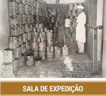
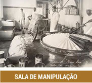
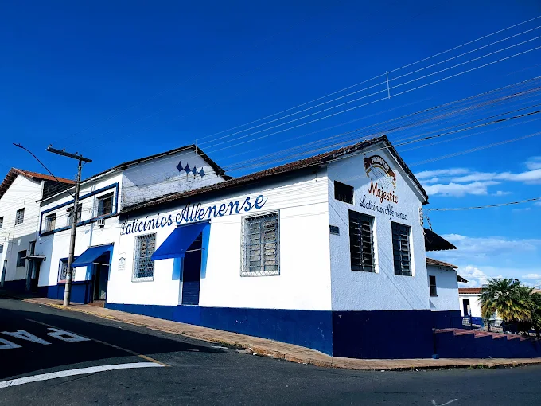
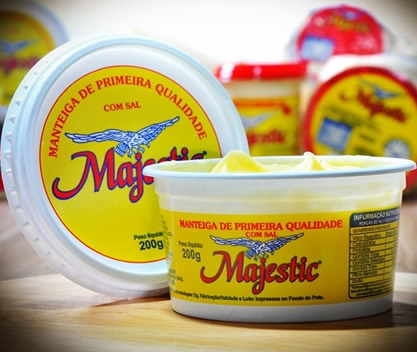

Desde 1975 em Alfenas, MG
Produtos Majestic
O tradicional doce de leite do Sul de Minas, feito por uma família que transformou cuidado, receita e tempo em marca registrada.
Nossa história
Uma marca construída por gerações
1943
O início
Henrique Munhoz Garcia iniciou com seus filhos a produção de manteiga Meia Lua em Fama, Minas Gerais.

1967
Chegada a Alfenas
A família adquiriu o Laticínio Alfenense, no endereço onde a empresa permanece até hoje.

1975
Doce de leite
A fabricação do doce de leite começou com a marca Meia Lua e ganhou o nome Majestic ao lado dos demais produtos.

Hoje
Tradição em evolução
A dedicação ao processo e aos ingredientes mantém a linha em crescimento, com qualidade sempre aperfeiçoada.
Linha Majestic
Produtos para vender, presentear e saborear
Doce de leite tradicional
Cremoso, marcante e feito para carregar o sabor clássico do Sul de Minas.

Queijos Majestic
Mussarela, minas frescal, minas padrão e ricota para consumo diário e revenda.

Manteiga e requeijão
Derivados com o cuidado de uma produção que atravessa gerações.
Fale conosco
Atendimento para clientes e revendas
Entre em contato com a equipe Majestic para informações sobre produtos, distribuição e pontos de venda.
Telefone: (35) 3291-1079
WhatsApp: (35) 99842-1087
Revenda: (35) 99750-0742
E-mail: laticiniosmajestic@ig.com.br